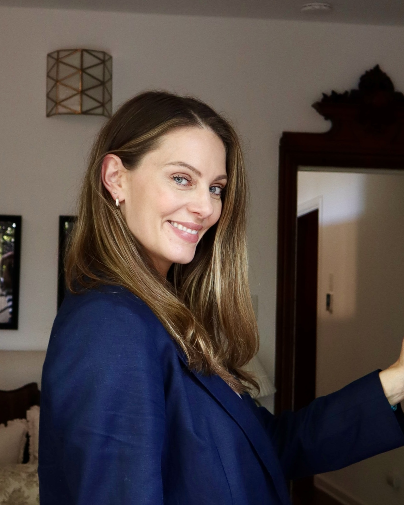

Real Estate, Explained
What Questions Should I Ask My Real Estate Agent?
The real questions to ask before hiring a real estate agent, from someone who's been on both sides of a bad experience and a good one.

I've had an okay real estate agent, and I've had a terrible one too. I know exactly what that felt like from the client side. And the way my clients talk about me now, the way they tell me I show up for them, I hear it a lot, because I know how to actually be that for them. So when people ask me what they should actually ask before hiring an agent, I'm not going to hand you a generic checklist. I'm going to tell you what I actually think, because I've sat on both sides of this table.
Don't pick the agent who always agrees with you
If I had to give you one piece of advice, it's this. Don't pick the agent who always agrees with you. Pick the agent who is able to ask the questions to really get the clarifying answers that you need, the ones that are unique to your situation. Anyone can nod along and tell you what you want to hear. What you actually need is someone who's going to dig into what's true for you specifically, not run the same script they run on everybody who walks through the door.
What buyers should ask: what would talk you out of this house?
Everyone walks into a showing ready to be sold. Almost nobody asks the opposite question, and it might be the most important one there is: what would talk you OUT of this house? I want a buyer to hear the truth from me even when it's not the thing they were hoping to hear in that moment, because the alternative is watching someone fall for the photos and skip right past the thing that's going to bother them six months from now.
What buyers should ask about commission
Here's one that trips people up because the rules actually changed. The seller is the one who decides whether to offer to cover buyer-agent commission at all now, it's not automatic anymore. So if you're a buyer, you sign an agreement with your own agent for a certain amount, and if the seller doesn't offer to cover the full thing, you could be the one making up the difference out of your own pocket. Ask that question upfront, not after you're already under contract.
And if you're selling, the version of this question for you is simpler: ask your agent whether you're offering to cover buyer-agent commission, and how much, because that's your call to make, and it affects how many buyers show up ready to make an offer.
You don't need a hyperlocal agent. You need one who knows how to win the deal.
I think a lot of people believe they need that hyperlocal agent, and honestly, they don't. Just because an agent only works in, say, Pasadena doesn't mean that agent is the best agent. The best agent is the one who truly knows how to negotiate and win the deal.
L.A. is such a huge place that most agents don't just work in one specific spot. Some agents do a really great job breaking into one market, and I'm not knocking that, the different neighborhoods of L.A. flow into each other and there are absolutely micro-markets worth being aware of. But when it comes down to actually negotiating on a house, you either have an agent who knows what they're doing and has the connections and the relationships, or you don't. That's really the whole thing.
And a good agent is still going to know those little pockets in all the different areas, not because they only work one zip code, but because we're out seeing houses constantly. That's just what we already know from being in it every day.
Where there's a will, there's a way
People ask me what I do when a deal almost falls apart, a low appraisal, cold feet, an inspection surprise. I'll tell you what I don't do: anything shady, anything less than fully transparent, anything that isn't showing up the best way I know how to show up for my client. I'm not in the position where I need to do something questionable to get a deal done.
What it really comes down to is creative problem-solving. I always say, where there's a will, there's a way. That means knowing both sides of the transaction, not just my own. I want everyone at that table looking out for their own best interest, and there is a way for everyone to feel like they're heard, like their opinions are valid, like their desires and needs and wants are actually being met. That's how you get to a win-win. Even when people don't agree on a certain point, there's always a way through it.
Innovation over trendy
I think there's something wonderful about innovation, not being trendy, being innovative. I see a lot of older agents really struggling right now, and I get it, it's tough falling behind in the age of AI. But I'm able to use AI and technology to genuinely support and help my clients, to show them real information in a matter of minutes instead of a couple hours to a couple days. I do that through building my own systems. I built my own website. That's not a trend to me, that's just how I work now.
I've also been able to delegate huge parts of my business to my AI agents, the ones who take care of the work behind the scenes, so I can actually stay focused on my clients instead of getting pulled into everything else.
Busiest doesn't mean best
Here's a piece of conventional wisdom I'd push back on: that you should go with the agent who's super, super busy, the one with all the deals going at once. Yes, that agent probably has a team behind them. But I know for a fact that some big, busy agents don't call their clients back. They don't call the other side back either.
You want someone experienced, but going with the agent who's blowing up on Instagram might not actually be the right call. It sounds good on paper. Your first meeting with them is probably going to be great, because they'll woo you, they're probably very charismatic on camera. But ask yourself: are they going to give you one-on-one attention? Are they going to go to the ends of the earth for you? Are they actually going to pull it home for you when they've got ten other listings in the pipeline at the same time? Just something to think about before you sign with the busiest name in the room.
The thirtieth house
I once worked with a buyer who saw a lot of houses. I'm talking about a lot of houses. My job was to show her every single one she wanted to see, and I obliged, because I think it's important for people to come to their own conclusions about their must-haves and their don't-wants. Nobody else can hand that to them.
But my job in that process was also asking her the right questions along the way. Putting things back into perspective of how she actually wanted to live. Reminding her of things she had said before, back when we were a lot earlier in the search. Being honest and transparent with her the whole time, and not just saying yes to a house because it was the thirtieth one we'd seen together and we were both tired.
What to watch for in that first meeting
Watch for an agent who comes prepared with real numbers, not just charm. And this matters more than almost anything else: they have to be an agent of their word. If they don't follow up right away, that, to me, is a big red flag. That first meeting is basically a preview of what it's going to be like working with them for the next few months, so pay attention to how they actually show up, not just what they say while they're sitting across from you.
If you've been burned before
I understand. I've been there myself. I've had an okay real estate agent, and I've had a terrible one too. And the way my clients describe me now, that I show up for them, I hear it a lot, because I know how to actually be that for them. I know it's scary and it's a big decision, so really, just trust your gut and find the person who actually feels like your real estate agent. It's more than someone who's just good at the business side of it. It's very personal. It's someone you really feel like you can talk to, someone who really listens, someone who mutually hears you, and someone who's actually down to get the work done themselves, not someone who hands it off to the minions on their big team the second you sign.
If you're reading this before you've even started interviewing anyone, I hope you walk away thinking, okay, she's honest, she's transparent, she knows what she's talking about. I want you to feel confident that you stumbled onto exactly the information you needed, right when you needed it.
I've Got You.